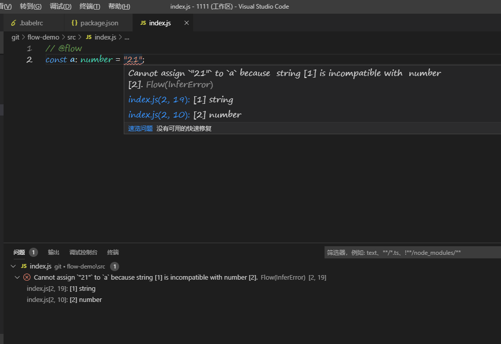

众所周知， js是弱类型的语言，由此有了很多的优点，也出现了大量由此导致的错误，难以定位。当然有类似于ts之类的语法糖来解决此问题，ts因为是从c#演变而来的，所以入门有一定的门槛，所以我们来一下flow这个更轻巧的工具。
先来看一下flow在vs code中的表现效果:

跟ts的提示类似，它会实时检测所有的包含flow注释的文件，在vscode中需要安装Flow Language Support插件.
安装过程可以使用yarn和npm安装，推荐使用yarn，因为安装起来会更快。
yarn add --dev @babel/core @babel/cli @babel/preset-flow
然后在.babelrc中添加此插件
{
"presets": ["@babel/preset-flow"]
}
添加flow-bin的依赖
yarn add --dev flow-bin
执行flow:
yarn run flow
执行成功后，会在后台启动一个进程进行监听，如果你已经安装了vscode的插件的话，可以忽略这一步，插件会自动启用flow.
做完上面这些后，你就可以在你的js文件中使用强类型来约束你的代码了，在需要使用flow的文件头部添加 // @flow
1 // @flow
2
3 function foo(x: ?number): string {
4 if (x) {
5 return x;
6 }
7 return "default string";
8 }
然后运行 yarn run flow 你就可以看到如下的输出
test.js:5
5: return x;
^ number. This type is incompatible with the expected return type of
3: function foo(x: ?number): string {
^^^^^^ string如果你使用vscode的插件，就会在保存的时候自动提示这些错误出来，如第一张示例图片那样。
flow官网：https://flow.org/en/